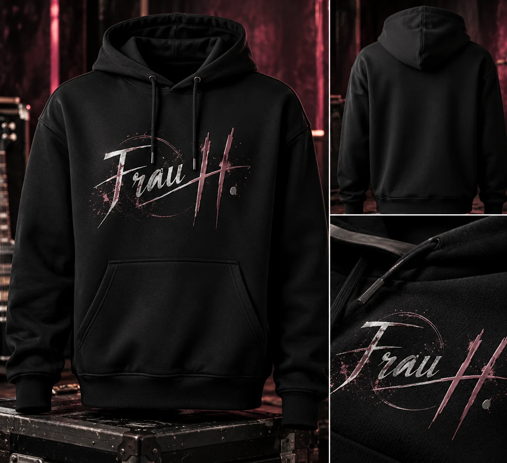
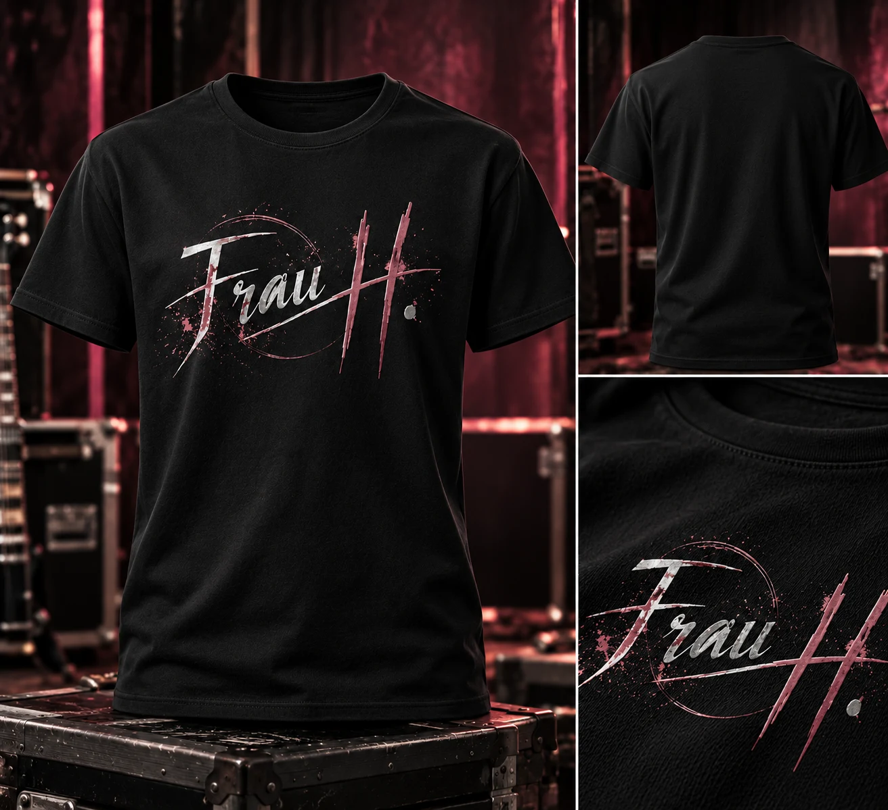
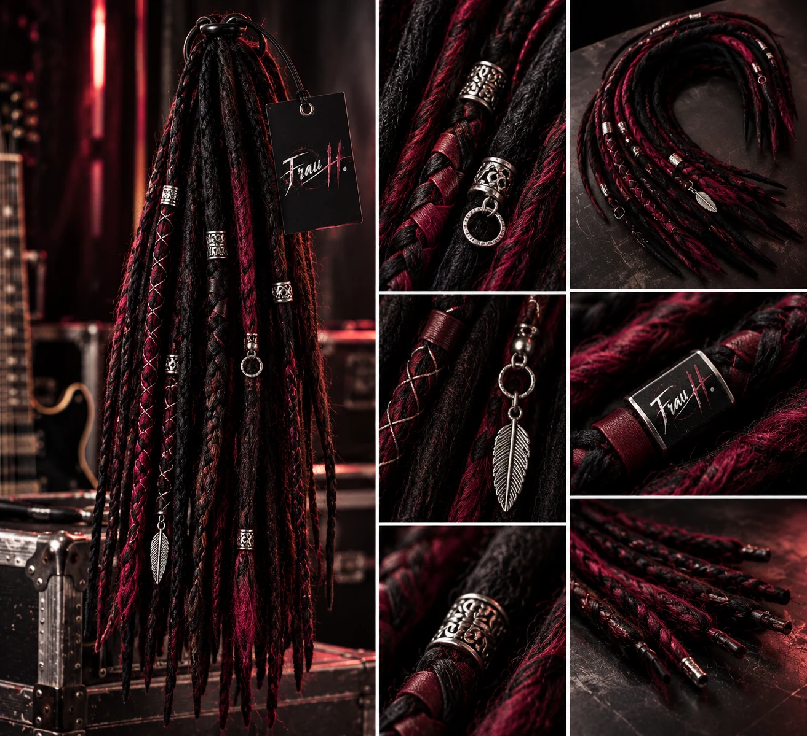

Ich musste jetzt wirklich lachen + Gänsehaut und Tränen in den Augen.Private Rückmeldung zu einem Song

Virtuelle KI-Künstlerin · Deutschsprachiger Rock
Rebellisch. Ehrlich.
Kompromisslos.
Kompromisslos.
Nicht für jeden.
Aber für die, die fühlen.
NICHT FÜR JEDEN.LIEBER UNBEQUEM ALS AUSTAUSCHBAR.ANPASSUNG IST KEINE STÄRKE.GEFÜHLE HABEN KEINEN LAUTSTÄRKEREGLER.ZU LAUT FÜR DEINE KOMFORTZONE.NICHT PERFEKT. NICHT ANGEPASST.REBELLISCH. EHRLICH. KOMPROMISSLOS.
 ▶ Album öffnen & Songs anhören
▶ Album öffnen & Songs anhörenDas Album · Projektvorschau
Mit voller
Absicht.
Ecken. Kanten. Und kein Bedürfnis, jedem zu gefallen.
„Mit voller Absicht“ steht für die Haltung hinter Frau H.: Gefühle aussprechen, Widersprüche zulassen und der eigenen Stimme Platz machen. Dunkle Gitarren treffen auf Melodien, die bleiben.
Den Sound kennenlernen ↓Albumkonzept für die Projektpräsentation.Klick auf die CD und höre alle acht Songs auf der Albumseite. Ein Veröffentlichungstermin steht noch nicht fest.
Echte Nachrichten · Echte Emotionen
Wenn Musik mehr sagt als Worte.
Manche Songs bleiben nicht nur im Ohr. Sie lösen etwas aus.
Nicht für jeden. Aber für die, die fühlen.
Der Sound
Musik, die nicht
um Erlaubnis fragt.
Druckvolle Gitarren, markante Stimmen und Melodien, die sich festsetzen. Frau H. verbindet die Härte des Rocks mit der Verletzlichkeit ehrlicher Geschichten. Mal kompromisslos laut, mal erschreckend nah. Aber niemals belanglos.
Deutschrock
Klare Worte statt schöner Ausreden. Kantige Riffs, treibende Rhythmen und Texte, die auch dort weitermachen, wo andere lieber schweigen.
Alternative Rock
Zwischen Wut, Zweifel und Aufbruch. Unberechenbare Dynamik, eingängige Melodien und der Mut, musikalisch auch mal unbequem zu sein.
Metal-Balladen
Schwere Gitarren treffen auf große Gefühle. Ruhige Momente bauen Spannung auf, bis kraftvolle Refrains alles herauslassen, was vorher keinen Platz hatte.
VIRTUELLE KI-MUSIKKÜNSTLERINDigitale Figur.
Digitale Figur.
Klare Haltung.
Frau H. ist ein virtuelles Musikprojekt für Deutschrock, Alternative Rock und melodischen Heavy Metal. Ihr Erscheinungsbild und ihre Musik entstehen mithilfe künstlicher Intelligenz.
Im Mittelpunkt stehen eine eigenständige Künstlerpersönlichkeit und Texte über das, was unter der Oberfläche liegt: Verletzlichkeit, Widerstand und den Wunsch, sich nicht ständig passend machen zu müssen.
Ihre digitale Herkunft gehört offen zu diesem Projekt. Genau wie Schwarz, Bordeaux und eine ordentliche Portion Eigensinn.
Frau H.
„Nicht für jeden.
Aber für die, die fühlen.“
Frau H. · Merch-Konzept
Trag, was du fühlst.
Haltung hört nicht beim letzten Refrain auf. Entdecke die Ideen für die Frau-H.-Kollektion.
Alle Produkte sind illustrative Entwürfe. Kein Verkauf, keine Bestellungen und keine Zahlungen.

01 / ENTWURFSchwarz · Frau-H.-Logo
Hoodies
Haltung zum Überziehen.
Produktidee ansehen
Schwarzer Hoodie mit Frau-H.-Logo auf der Vorderseite. Die Rückseite bleibt schlicht. Produktentwurf mit Vorderansicht, Rückansicht und Druckdetail.
Konzeptvorschau · Nicht bestellbar
02 / ENTWURFSchwarz · Frau-H.-Logo
T-Shirts
Kein Shirt für leise Tage.
Produktidee ansehen
Schwarzes T-Shirt mit Frau-H.-Logo auf der Vorderseite und schlichter Rückseite. Produktentwurf mit Vorderansicht, Rückansicht und Druckdetail.
Konzeptvorschau · Nicht bestellbar03 / ENTWURFAlbum · Physische CD als Konzept
CDs
Mit voller Absicht.
Produktidee ansehen
Das Album als physische CD: ein Entwurf für die Sammlung. Die Songs kannst du bereits auf der Albumseite anhören.
▶ Songs anhörenKonzeptvorschau · Nicht bestellbar
04 / ENTWURFSchwarz & Bordeaux · Silberne Akzente
Dreadlocks
Eigensinn. Bis in die Spitzen.
Produktidee ansehen
Ein Dreadlock-Set als Styling-Konzept in Schwarz und Bordeaux mit silberfarbenen Schmuckelementen. Länge und Ausführung sind noch offen.
Konzeptvorschau · Nicht bestellbarRebellisch. Ehrlich. Kompromisslos.
Gut zu wissen
Fragen? Klare Antworten.
Wer oder was ist Frau H.?
Frau H. ist eine virtuelle KI-Rockkünstlerin. Keine klassische Band, kein Mensch auf der Bühne. Aber eine musikalische Identität mit Ecken, Kanten und einer klaren Haltung.
Ist die Musik wirklich KI-generiert?
Ja. Bei Frau H. kommt künstliche Intelligenz zum Einsatz. Das wird auch nicht versteckt. Denn entscheidend ist nicht nur, womit Musik entsteht, sondern auch, was sie erzählt.
Gibt es Frau H. wirklich?
Als reale Sängerin? Nein. Als Musikprojekt mit eigener Persönlichkeit, eigenen Songs und einer klaren Botschaft? Absolut.
Welche Musik macht Frau H.?
Deutschrock, Alternative Rock und melodischen Heavy Metal. Mal laut, mal verletzlich, mal unbequem. Aber garantiert kein weichgespültes Gedudel.
Worum geht es in den Songs?
Um das echte Leben. Um Beziehungen, Enttäuschungen, innere Kämpfe, Selbstbehauptung und die Dinge, die man manchmal lieber herunterschluckt.
Wie heißt das erste Album?
Mit voller Absicht. Ein Titel, der ziemlich gut beschreibt, wofür Frau H. steht: Musik mit Haltung statt musikalischem Einheitsbrei.
Wo kann ich die Musik hören?
Direkt hier auf der Website: Klick auf die CD oder öffne den Bereich „Songs“. Dort kannst du die Stücke von Frau H. anhören.
Kann ich die Songs herunterladen oder kaufen?
Aktuell kannst du die Musik auf der Website kennenlernen. Informationen zu Downloads und Kaufmöglichkeiten werden ergänzt, sobald diese verfügbar sind.
Kann Frau H. live auftreten?
Frau H. ist eine virtuelle Künstlerin. Klassische Livekonzerte mit einer realen Sängerin gibt es daher nicht.
Kann ich Frau H. kontaktieren?
Kontaktmöglichkeiten werden auf der Website ergänzt, sobald sie verfügbar sind.
Für wen ist die Musik gedacht?
Für Menschen, die lieber etwas fühlen, als sich mit belangloser Hintergrundmusik berieseln zu lassen. Und für alle, die wissen, dass das Leben nicht immer harmonisch klingt.
DEINE STIMME / FRAU H.
Sag’s Frau H.
Was soll Frau H. endlich mal laut sagen? Erzähl von einem Gefühl, einem Gedanken oder einem Thema, das einen Song verdient.
PRIVATER POSTEINGANG · DEMO
Hinter den Kulissen
So könnte Frau H. später eingehende Musikwünsche sehen. Die Vorschau ist nicht passwortgeschützt und enthält keine echten Einsendungen.
Kopfchaos & Gefühle
Beispiel: Ein Song über die Gedanken, die nachts einfach nicht still werden.
FRAU H. / INTERAKTIV
Mach Krach. 🎸
Baue deinen eigenen Rock-Riff: Tippe Noten in die 16 Schritte, drücke Play und hör dir deine Melodie an. Mehrere Töne gleichzeitig ergeben Akkorde.
Dein Riff ist bereit. Setze ein paar Noten!
Deine Melodie läuft direkt im Browser. Keine Übertragung an einen Server.Das ist erst der Anfang
Hier wird’s noch laut.
Neue Songs, Musikvideos und Einblicke bekommen hier ihren Platz. Diese Website zeigt die Marke Frau H. als Vorschau für die Projektvorstellung.
Zurück nach oben ↑